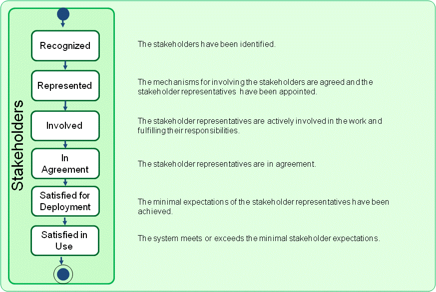

Essence Kernel
Stakeholders: The people, groups, or organizations who affect or are affected by a software system.
The stakeholders provide the opportunity, and are the source of the requirements for the software system. They are involved throughout the software engineering endeavor to support the team and ensure that an acceptable software system is produced.
Stakeholders are critical to the success of the software system and the work done to produce it. Their input and feedback help shape the software engineering endeavor and the resulting software system.
During the development of a software system the stakeholders progress through several state changes. As presented in the figure below, they are recognized, represented, involved, in agreement, satisfied for deployment and satisfied in use. These states focus on the involvement and satisfaction of the stakeholders, from their recognition as stakeholders through their participation in the development activities to their satisfaction with the use of the resulting software system. They communicate the progression of the relationship with the stakeholders who are either directly involved in the software engineering endeavor or support it by providing input and feedback.

The first thing to do is to make sure that the stakeholders affected by the proposed software system are recognized. This means that all the different groups of stakeholders that are, or will be, affected by the development and operation of the software system are identified.
The number and type of stakeholder groups to be identified can vary considerably from one system to another. For example the nature and complexity of the system and its target operating environment, and the nature and complexity of the development organization will both affect the number of stakeholder groups affected by the system.
It is not always possible to have all the stakeholder groups involved. Focus should be primarily on the ones that are critical to the success of the software engineering endeavor. It is these stakeholder groups that need to be directly involved in the work. Their selection depends on the level of impact they have on the success of the software system and the level of impact the software system has on them. The stakeholder groups that assure quality, fund, use, support and maintain the software system should always be identified.
It is not enough to determine which stakeholder groups need to be involved, they will also need to be actively represented. This means that there will be one or more stakeholder representatives selected to represent each stakeholder group, or in some cases one stakeholder representative selected to represent all stakeholder groups, and help the team. To make the contribution of the stakeholder representatives as effective as possible, they must know their roles and responsibilities within the software engineering endeavor. Without defining clear roles and responsibilities, the software engineering endeavor runs the risk that some of its important aspects may get unintentionally omitted or neglected.
Once the stakeholder representatives have been appointed, the represented state is achieved. Here, the stakeholder representatives take on their agreed to responsibilities and feel fully committed to helping the new software system to succeed. Acting as intermediaries between their respective stakeholder groups and the team, they are now granted authority to carry out their responsibilities on behalf of their respective stakeholder groups.
The team needs to make sure that the stakeholder representatives are actively involved in the development of the software system. Here, the stakeholder representatives assist in the software engineering endeavor in accordance with their responsibilities. They provide feedback and take part in decision making in a timely manner. In cases when changes need to be done to the software system, or when the stakeholder group they represent suggests changes, the stakeholder representatives make sure that the changes are relevant and promptly communicated to the team. No software engineering endeavor is fixed from the beginning. Its requirements are continuously evolving as the opportunity changes or new limitations are identified. This requires the stakeholder representatives to be actively involved throughout the development and to be responsive to all the changes affecting their stakeholder group.
It may not always be possible to meet all the expectations of all the stakeholders. Hence, compromises will have to be made. In the in
agreement state the stakeholder representatives have identified and agreed upon a minimal set of expectations which have to be met before the system is deployed. These expectations will be reflected in the requirements agreed by the stakeholder representatives.
Throughout the development the stakeholder representatives provide feedback on the system’s state from the perspective of their stakeholder groups. Once the minimal expectations of the stakeholder representatives have been achieved by the new software system they will confirm that it is ready for operational use and the satisfied for deployment state is achieved.
Finally, the stakeholders start to use the operational system and provide feedback on whether or not they are truly satisfied with what has been delivered. Achieving the satisfied in use state indicates that the new system has been successfully deployed and is delivering the expected benefits for all the stakeholder groups.
Understanding the current state of the stakeholders and how they are progressing towards being satisfied with the new system is a critical part of any software engineering endeavor.
Stakeholders have been identified.
The alpha is in this state when:
The mechanisms for involving the stakeholders are agreed and the stakeholder representatives have been appointed.
The alpha is in this state when:
The stakeholder representatives are actively involved in the work and fulfilling their responsibilities.
The alpha is in this state when:
The stakeholder representatives are in agreement.
The alpha is in this state when:
The minimal expectations of the stakeholder representatives have been achieved.
The alpha is in this state when:
The system has met or exceeds the minimal stakeholder expectations.
The alpha is in this state when:
N/A
N/A
Copyright © 2012 Ivar Jacobson International AB, Florida Atlantic University, Fujitsu, Impetus, International Business Machines Corporation, KTH Royal Institute of Technology, Metamaxim Ltd., PEM Systems, Stiftelsen SINTEF, University of Duisburg-Essen. , ver. 1.0.3